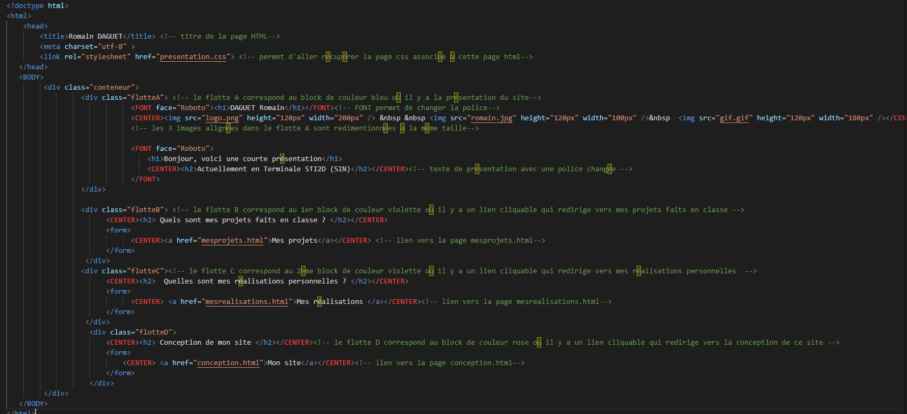

Conception de mon site
Pour ce site, j'ai utilisé :
- Visual Studio pour écrire mon code :
- Il permet de détecter les différents types d'instructions grâce aux couleurs.
- Il permet aussi d'indenter les instructions pour plus de clarté.
- Enfin, sur le web, il est indiqué qu'il est beaucoup utilisé par les développeurs
- Github pour le publier
Présentation de la page principale du site :
- J'ai créé un bloc principal avec une feuille de style.
- Dans ce bloc principal, j'ai ajouté 3 sous-blocs.
- Dans chaque sous-bloc, j'ai mis un titre et un lien qui redirige vers une autre page avec une autre feuille de style.
Voici quelques images de mon code :
Screen du code HTML et CSS de la première page du site :
